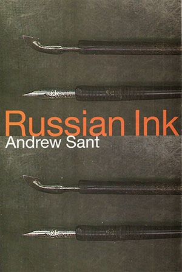

Russian Ink
Andrew Sant

Description
...trust me, a swatted fly knows the cry of Neighbourhood Watch and gravity tots up the cost when an apple drops. Like the KGB, the poems in Russian Ink work beneath respectable surfaces. In his expansive new collection, Andrew Sant’s language is often charged with wit, and is always incisive. There’s characteristic playfulness in ‘Anthony Sant’, a comic take on Graham Greene’s unpublished first novel, and in a vibrant series featuring the folkloric Green Man on a contemporary mission. But beneath surface detail there are powerful, controlled emotions. His ‘Stories of My Father’ is like Turgenev on holidays. Above all, these are enjoyable poems, rich in imaginative diversity. Andrew Sant is a craftsman who is not afraid to take risks with language and themes. This book is a major work by an important, innovative poet. Anthony Lawrence, The Mercury Among the poets playing the more traditional tunes, Andrew Sant is the best of those new to this reviewer. Conor O’Callaghan, The Times Literary Supplement Andrew Sant writes intellectually and linguistically compelling poems... made possible when an exceptional facility with language collides with everyday subjects. Brian Henry, Australian Book Review
Description
...trust me, a swatted fly knows the cry of Neighbourhood Watch and gravity tots up the cost when an apple drops. Like the KGB, the poems in Russian Ink work beneath respectable surfaces. In his expansive new collection, Andrew Sant’s language is often charged with wit, and is always incisive. There’s characteristic playfulness in ‘Anthony Sant’, a comic take on Graham Greene’s unpublished first novel, and in a vibrant series featuring the folkloric Green Man on a contemporary mission. But beneath surface detail there are powerful, controlled emotions. His ‘Stories of My Father’ is like Turgenev on holidays. Above all, these are enjoyable poems, rich in imaginative diversity. Andrew Sant is a craftsman who is not afraid to take risks with language and themes. This book is a major work by an important, innovative poet. Anthony Lawrence, The Mercury Among the poets playing the more traditional tunes, Andrew Sant is the best of those new to this reviewer. Conor O’Callaghan, The Times Literary Supplement Andrew Sant writes intellectually and linguistically compelling poems... made possible when an exceptional facility with language collides with everyday subjects. Brian Henry, Australian Book Review
{kind=link}
Information
| ISBN | 1876044349 |
| Release | 2001 |
| Pages | 112 |
About the Author
Reviews
Mattoid Review
Reviews Two Very Different ‘Melbourne’ Dreamings Melbourne Elegies , Bread , Russian Ink , The Dining Car Scene Brian Edwards Mattoid, No. 55, 2006 .......Andrew Sant’s Russian Ink is a generous collection that offers accessibility with edginess. Most typically, these are poems about ‘everyday’ experience; but, as should be the case, this is the everyday reconceived astutely and anew such that recognitions of the familiar include, simultaneously, those necessary factors (at least for writers) of particularity and difference. The sense of contexts that include and exceed the local is implicit in the book’s title which comes from the opening poem, ‘Nightfall,’ where a string of metaphors evokes the coming of darkness and leads to the final lines: ‘Then try repeating / Dark clouds over Siberia’ / and ‘I write with Russian ink’.’ Here there are poems about experiences of travel, parting, family, ailments, showering, holidays, a snake catcher, moths and carpentry. But ‘Moths,’ for example, moves in its five parts from the bemused description of moths beside the home front door to childhood memories of a man who captured specimens, the names of planes, Darwin in Brazilian forests, and to such imaginative projections as: There’s change in any event - the moths are testing the binary stakes, ranging from dark toward light, a scattered archipelago, at rest, here, weightless as images gleaned from a book. As they linger in drawers and, with butterflies, in taxonomies, collections, forest ways and the imagination, moths can provoke poetry. Similarly, rituals of showering include an image of Juliet Binoche, a pun on Eliot’s ‘falls the Shadow,’ details of plumbing and decor, a play on Heraclitus, and luxury of waterflow. Interspersed with short poems notable for their precise use of language and the dexterity of their formal arrangements, there are longer sequences: ‘Anthony Sant’ with its attention to texts, publication, Graham Greene and the vagaries of literary history; ‘Stories of My Father’ which presents a fine litany of detail around ‘I just wanted to get him off my back. / Now it’s the certain weight I lack;’ ‘Indian Pacific’ and the intermingling of specificities of journey and dream; ‘All We Know’ as a variable exploration of neighbours and the limitations (and temptations) of knowing; and the tight-checking sonnets of ‘Belli’s Shade’ which evoke images of Giuseppe Belli, Rome, a conference, sexuality and a relationship. In addition, there are the Green Man Poems, fourteen of them, that update the mythical figure, setting him loose upon the world as a sort of flaneur of the imagination, and ‘Summertime: A Holiday Chronicle’ which presents the cleverly conceived narrative of Jim and Wendy and the boys, with sundry doubts, clues, shifts, discoveries and, it seems, a happy ending. ...These are interesting collections. Black Pepper continues to present writing that warrants attention.
Southerly Review
Russian Ink Nicolette Stasko Southerly, Vol. 62, No.1, 2002 In China, porcelain is defined as ‘pottery that is resonant when struck; in the west, a material that is translucent when held to the light’. It is, of course, easily chipped and equally breakable. One could say this is also a plausible description of good poetry and one which applies to the following three collections [Diana Bridge, Porcelain , Gig Ryan, Heroic Money , Andrew Sant, Russian Ink ]... ... from Black Pepper, another very handsome production is Russian Ink by Andrew Sant. In other respects, however, and although Bridge and Sant share a certain wordly knowledge and erudition, these two poets could hardly be less alike. While the poems in Porcelain are meditative and elegiac, concentrating on the past, those in Russian Ink are very much in the present tense - audacious, romping through ordinary life as observed from a train window, seen over the road or heard next door: ‘...trust me, / a swatted fly knows the cry of Neighbourhood Watch / and gravity tots up the cost when an apple drops’ (‘All We Know’). The poems are witty, acerbic and intelligent. Even the elegy ‘Stories of My Father’, remains poised on the edge, equally willing to see the absurdity and imperfection of human beings and their relationships, as well as the sadness and fraility of existence: I’ll never get it straight, or wish to. There’ll not be his Scotch to intercede. I am the sole beneficiary. Although occasionally perhaps too clever, rarely does Sant’s humour overstep the mark by being judgemental or smug. He just as often turns the magnifying glass on himself - as in what the cover blurb describes as his ‘comic take on Graham Greene’s unpublished novel Anthony Sant’: Of readers or critics I relinquish my need; leave ‘Sant’ to the reams of that poet. Russian Ink is a rich collection replete with - there seems no other word for it - muscular verse which dances through the pages. I particularly enjoyed the satiric narrative ‘Summertime’ with its paranoid male characters, just for the sheer playfulness. Sant’s ability with rhyme is unusual in contemporary poetry and almost always subtle and surprising. But it would be unfair to leave the impression that Russian Ink is only entertaining: there are many poems of substance and feeling: ‘If now I could grasp the source / of this darkness when the sky is bright’ (‘Down from Mars’); ‘I’m recalling now since memory / comes increasingly to seem / a habitation’ (‘Moths’). The book, however, is simply too long. This reader at least, could have done without the ‘Green Man Poems’ in particular, which, while inventive and sometimes interesting, stretch the theme beyond its limits.
The Sunday Tasmanian Review
Changing our way of seeing Anthony Lawrence (poet) The Sunday Tasmanian , December 28 Album of Domestic Exiles appears at a critical time in the publishing of Australian poetry. Black Pepper is one of two or three publishers committed to continuing what most mainstream houses see as a financial drop in the bucket. Of course, anyone who knows anything about the genre understands that finance is not concomitant with the writing and publishing of poetry. Black Pepper is a floodlight in the gloom, and they have an outstanding catalogue. Andrew Sant’s fifth collection, like its cover, is sharp-edged, yet draws you in. We see an aging photo of a small boy wearing a fighter pilot’s helmet. An oxygen mask hangs down like some terrible growth under his chin. He is gazing off into the distance while standing against a backdrop of suburban security. It’s a key to the collection, which can be read as one long poem, or seen as a series of connections. Sant has crafted past, present and future into a book that is, while not totally seamless, a map that unfolds by itself as you read. ‘Climate’ is the perfect opening poem. It lays the foundations for many of the book’s concerns: loss and replenishment, pure observation (through memory and immediacy) and the poet’s sense of his own life and death; of how an acceptance of this balance is essential for growth. Take these examples from the last two stanzas: continuance, co-operative death, interdependence, comings and goings . Having sampled the dislocation, here’s unity: ...a round seven years it takes for the all-change of my body’s cells and ...a clamour of bees that have sped beyond winter: everything is leaving Reading back and forth through this book, I had a sense of someone mapping presence and absence, despair and exhilaration: a curious cartography of the mind and body. It works. You don’t need a compass. Sant’s fine sense of craft and his ability to change our way of seeing are directions enough. Often, he uses tight rhythms in long-limbed, narrative pieces like ‘Mainstreet Fruiterer’ or ‘The Pleasure Seekers’. Though, even here, there is a lyricism that works on the inner ear as the stories unfold. ‘The Pleasure Seekers’ has echoes of Paul Muldoon, that Irish shape-changer, and the American poet August Kleinzahler. Take the last two lines: Dark eyes watch them stalking shadow-like across wilted offerings that might be refuse, towards the insomniac, throbbing bars. The brilliant ‘Elegy for the Queen’s Head’ reveals how Sant can align black humour and history to create a common, local experience. I’m amazed that a poem about a postage stamp can be so unsettling: Never in miniature did she flinch or shake the tiny sparklers at her throat… ‘Voyage’, while being the most prescriptive of the poems concerning exile, is a poignant diary of internal/external conflict in a new land. It’s like a talk-back program about identity coming and going on the wind until, when you’re close enough to hear every word, a gallery of lives and stories come through indelibly. Album of Domestic Exiles is a book that works on many levels: as a whole, and within each poem. Andrew Sant is a craftsman who is not afraid to take risks with language and themes. This book is a major work by an important, innovative poet.
The Age Review
When the shape is everything Gig Ryan The Age , 23 June 2001 Russian Ink is Andrew Sant’s sixth book. His work is always consistent, but Sant’s strengths and weaknesses do not change from book to book and again there are stray endings preceded by a sudden formality or ominousness, striking images lost in a sea of unevenness (‘At his wrists / his sleeves are Elizabethan / frills of suds’), the sage-jester persona, elegies to childhood. In one of the best poems, ‘Anthony Sant’, the title of an unpublished Graham Greene novel, he finds parallels between writers - ‘Two fat volumes for a life outpiloting death / while I laze in the wake of what you wrote’. And later: Proof he’s really a brother, a chum, a bulwark in such dark hours, as publishers know when readers fail to erupt. Ah, far less risk besets the unpublished manuscript. In many poems, Sant is straitjacketed by a traditional sense of melody and rhythm, with corrugating internal rhymes and metronomic assonance. Although he pays homage to such unlikely forebears as Larkin and Graves, as well as Pope and Browning perhaps, he misreads Larkin as pure domesticity and Graves as wobbly excess, and so his imitations misfire. Developments in Sant’s work are chronological and philosophical, not linguistic. The long fourth section, ‘Summertime’, details a family holiday, and though the odd formal rhyme parcels up the action, this poem is too attached to the subject it puzzles over at length in a form of biographical penance. Sant echoes Ted Hughes at times in his ‘Green Man’ poems, with their epigraph from Graves and he also uses some Berryman-like inversions and contortions unconvincingly: There, on the slippery deck, I first met you, famous poet, who could tilt the globe of memory, exile words in blue acres, exact, within sea-whipped cartography’s grid, a lasting measure. Compare that to Berryman’s ‘Dream Song 283’: I seem to be Henry then at twenty-one steaming the sea again in another British boat again, half mad with hope: with my loved Basque friend I stroll the topmost deck high in the windy night, in love with life which has produced this wreck. The last section has a series of poems extrapolating single objects - moths, ferries, pencils - and this barcode poetry is a common device used by many. At other times poems are choked by inflated verbiage - ‘This returns to me now, checked, / since old reading from memory bleaches’. For Sant poetry comes with specific purposes and equipment whereas for Curnow [ The Bells of Saint Babel’s ] poetry is all-inclusive. Curnow’s writing is refined, not to conform to tastefulness, but to convey his matter most clearly. Some writers’ careers are a hacking away at the marble until the figure appears, others’ constant hackings only roughly order the shape into any change, but each change is neither better nor worse than the previous attempt.
Australian Book Review Review
The Impetus of Poetry - Russian Ink Paul Kane Australian Book Review , No. 231, June 2001 Wallace Stevens once remarked: ‘One of the essential conditions to the writing of poetry is impetus.’ It’s a statement worth keeping in mind when confronting a new book of poems because thinking about impetus helps us locate the concerns of the poet and the orientation of the book. Since poems are not objects so much as events, what drives a poem helps govern how it arrives at its destination - how, in fact, it is received by that welcoming stranger, the reader. Poems reveal their origins, whether they intend to or not. What Emerson says of character, that it ‘teaches above our wills’, that ‘we pass for what we are’, is true for poems as well. So it is not an idle question to ask of these books - these poets - their impetus, remembering that ‘impetus’ derives from the Latin ‘to seek’. I think it would be a mistake to assume that these poems seek to communicate with readers. The impetus here is not self-expression. At this point in their careers - and that’s a telling word in itself for a poet - both Andrew Taylor [ Götterdämerung Café ] and Andrew Sant have established themselves in durable fashion. Taylor, born in 1940, has just published his tenth volume of poems; Sant, born in 1950, his sixth. Neither, at this juncture, is likely to believe that he is reaching out to a populous audience of poetry lovers. Except in a few cases, that’s a supreme fiction, though a necessary one. Nor are these coterie poets, writing for a small devoted band of followers. No, like most poets at mid-career, the impetus is to write the poems that they, as poets, seek to write. If that sounds tautological, it needn’t be: devoted poets are devoted to their poems; they are ‘makers’, whatever their readers may, in turn, make of them. Consider the opening poems of each volume, and the way they gesture towards the writing of poetry. Sant begins ‘Nightfall’ with the lines: The leaves release their light. Bees, the fuchsia’s guzzlers, quit their day routine as somewhere a voice calls, ‘Come inside.’ That voice is presented as a domestic one (for the poet) and an instinctual one (for the bees), but it also serves as the voice of impetus, the call to turn inwards towards poetry, to ‘Come inside’. The whole poem in fact hinges upon the moment when ‘the past and future / fold in the breadth / of all the air’. We are left with enigmatic phrases that signal the presence of a poem seeking its poet: Then try repeating: ‘Dark clouds over Siberia’ and ‘I write with Russian ink’. Similarly, Taylor writes in ‘Das Abendland’ (that Occidental realm of Western thought and desire): Still there’s kindness a refracted glory in this proximity to Eden if one can bear the burden of absolute kindness. The kindness of natural beauty here is burdensome because it is absolutely beyond recompense; we cannot adequately repay the gift of life. In the same way, a poem is a ‘refracted glory’, a kindness language bestows freely upon the poet no matter how hard the poet may be working to be equal to it. If there is an ethics here, it is to write the best one can. This is not to suggest that these poems are merely self-reflexive or self-regarding. On the contrary, both poets engage with the world and speak to those encounters we denote as experience. What, then, distinguishes them, in both acceptations of the word, ‘to separate’ and ‘to recommend’... Andrew Sant’s poetry, like Taylor’s, evinces a sharp intellect at work, though Sant’s poems come across as more restless perhaps, more driven to seek out new approaches, new retrievals. There is a seven-part poem that takes up the name ‘Anthony Sant’ (the title of Graham Greene’s first novel, which went unpublished). It’s a witty poem in which the character Anthony learns of a namesake, Andrew Sant, who is living in Tasmania. The second section of the book is devoted to ‘Green Man Poems’, in which the tree-spirit of Frazer’s The Golden Bough becomes a curiously contemporary figure. And the fourth section is a long narrative poem, ‘Summertime: A Holiday Chronicle’, which details the amusing exploits of two couples caught up in a mysterious financial speculation. All of these poems display Sant’s quick inventiveness, which extends to the characteristic movement of his verse: he is fond of short lines with rapid shifts of sense and sudden stops, where one encounters single-word sentences in the midst of a line. This accords with Sant’s keen eye, which invites us to see as he sees, where the concern is more for immediacy than meditation, for compression more than extension. To write narrative in such a line is a challenge, but Sant is capable of it. At times, I miss the sweep of those long verse lines so captivating in earlier work ( Brushing the Dark , for instance), but there are memorable poems here to be sure. One is the sonnet sequence (in the difficult Petrarchan form), ‘Belli’s Shade’, which narrates a love affair in Rome between a visitor and a local beauty. Wryly, sonnet four begins: Above him, exalted, that later week, since on his back he gained a better view, a fresco of the Virgin, robed in blue, was one position, swapped about, until each peak released the lovers, breathless, cheek to cheek - Another fine poem is the moving memorial to Gwen Harwood, ‘Ferries’, where: There, on the slippery deck, I first met you, the famous poet, who could tilt the globe of memory, exile words in blue acres, exact, within sea-whipped cartography’s grid, a lasting measure. Here it is memory that makes for the memorable, and at times one can sense in Sant’s work a tension between invention and remembrance. In ‘Moths’, the poet is recalling a scene out of darkness, ...since memory comes increasingly to seem a habitation. Whether Sant’s poems inhabit memory or seek an imaginative realm, they are impelled by a receptivity that requires an openness to their own processes. As he says in ‘Waiting Games’: Waiting, too, needs a strategy as artists do, heads askew, gazing like the commuters, here, in cold air. Both Sant and Taylor understand such waiting. In poetry, it is a strategy for action, an essential condition for a poem’s impetus.
Island Review
Outside & Beyond - Russian Ink Chris Wallace-Crabbe Island , No. 86, Winter 2001 In the case of Andrew Sant, we turn to an old Island hand; he edited the journal - with Michael Denholm - for a decade. I realise, too, that his first book of poems was published as far back as 1980. This being the case, it is surprising that he has not had more critical attention. Sant appears on stage quietly, but he has range: he sets himself projects. He exhibits some of the qualities which a nineteenth-century critic found in Browning: ‘the cunning prying into detail, the suppressed tenderness, the humanity - the salt intellectual humour’. As an example of the last trait, he offers a suite of seven lyrics on the fact that Graham Greene’s unpublished first novel was called Anthony Sant . He gets around, with a fine poem on ‘Waiting Games’, a nice closure on pencils (he has beaten me to the draw on this theme), and a tribute to that larrikinesque Roman sonneteer, G.G. Belli. What I have called his projects include the eight elegiac ‘Stories of my Father’, fifteen pages of Green Man poems, and also a fictive holiday chronicle, done in the free tercets which suit him as a medium: ‘That Viet Nam War,’ a serious son is saying, flywire door slamming behind him, ‘did it generate economic gloom in Asia?’ His father is an arse reversing out of the fridge. And, of course, Vietnam was the Cold War in reverse. But this is also an ordinary kitchen; it enters what Randall Jarrell called ‘the dailiness of life’, as we can find it doing so often in Sant’s inventive poems. These poems use long lines or short, sonnet, parody and prose poems; there is even a ballad with the malty refrain, ‘Halm, Guinness, Fosters, Bass’. The guy who inhabits Sant’s poetry is clever, but is also a genial humanist who proffers the mild request, ‘Give me extremes of cold and hot / mixed in a mega-ritual’. Just the thing for a dinner guest.
Togatus Review
Book Reviews - Russian Ink Michael Lang Togatus, February 2001 As a reader it is a joy when you read something so well crafted in its style and energy that the effect is electric, sincere, almost profound. This is one of those books. Andrew Sant’s most recent book of poetry is fairly dark, never dull and very often funny. As with any writer worth their salt Sant’s work allows the reader to indulge in a fair whack of self-examination. Writing about life, love, the sociological importance of showering, waiting, and the guises of mistrust, Russian Ink is a volume of work that will grasp the heart and hold your attention. The touching and revealingly human ‘Stories of My Father’ and the humorously dark and refreshingly accurate ‘Summertime A Holiday Chronicle’ contrast dramatically with Sant’s ‘Green Man Poems’, such as ‘The Sensualist’ and the more Ballard-like ‘Greenland’. Sant has the ability to give to his writing an honest craft that makes for a satisfying book of poetry.